抗てんかん発作薬の作用機序と合理的多剤併用
抗てんかん発作薬の標的と代表薬、併用の根拠の強さ、2剤目の考え方を、14枚の図で整理しました（医師向け）。図をクリックすると原寸で開きます。図はすべて文献をもとに作成した模式図・グラフで、実際の縮尺や実測値ではないものは各図に明記しています。出典と限界は各図の注記とブログ記事をご覧ください。
図1
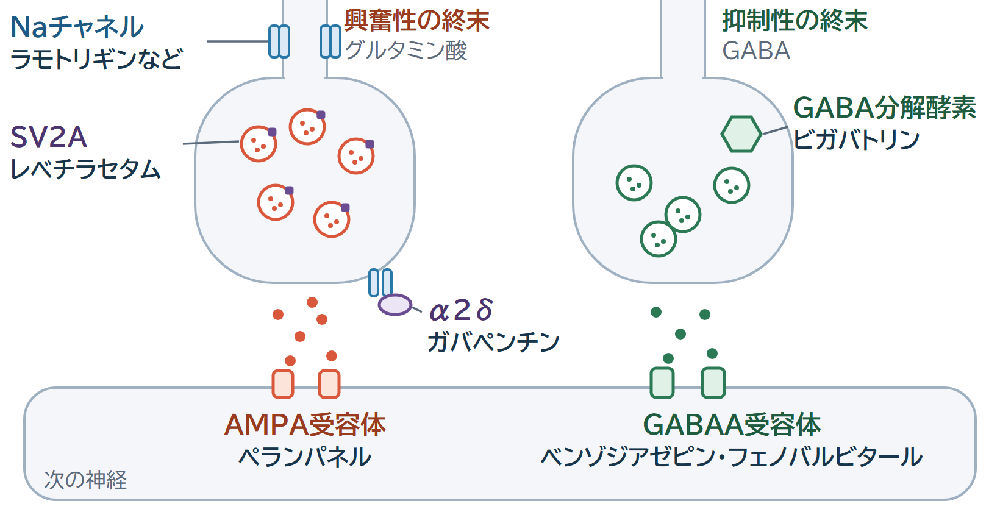
抗てんかん発作薬の作用点の全体像（模式図）。興奮性シナプスでは Naチャネル・SV2A・α2δ・AMPA受容体、抑制性シナプスでは GABAA受容体と GABA を分解する酵素が主な標的で、それぞれに代表薬を示す。
図2
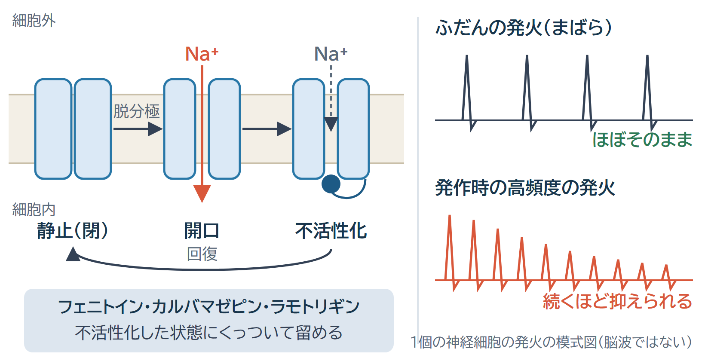
Naチャネルの3つの状態（静止・開口・不活性化）と使用依存性（模式図）。高頻度で発火している神経ほど不活性化状態のチャネルが多く、そこに結合する薬の作用が強く出る。
図3
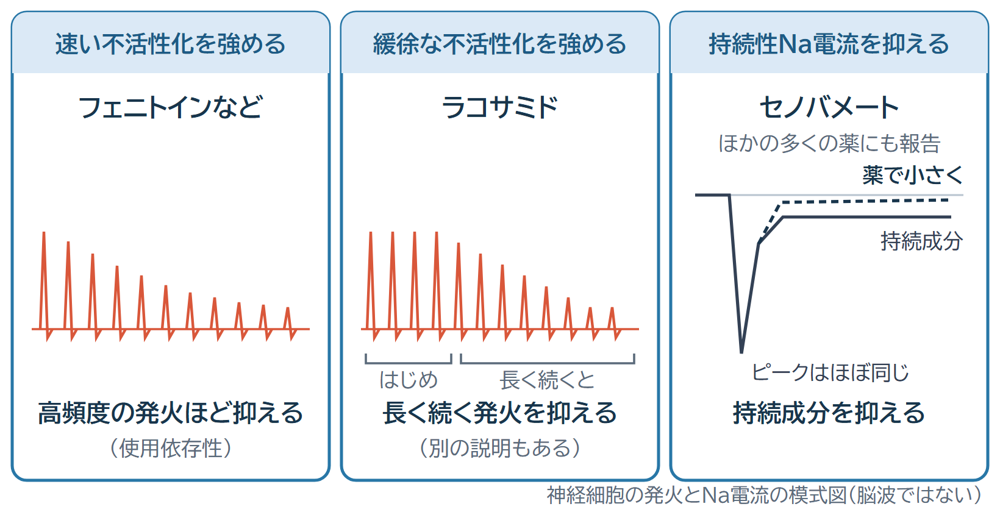
Naチャネルへの3つの作用点（模式図）。速い不活性化を強める薬（フェニトイン・カルバマゼピン・ラモトリギン）、緩徐な不活性化を強めると考えられている薬（ラコサミド）、持続性Na電流を強く抑える薬（セノバメート）。持続性Na電流の抑制は他の多くの薬でも報告されている。
図4
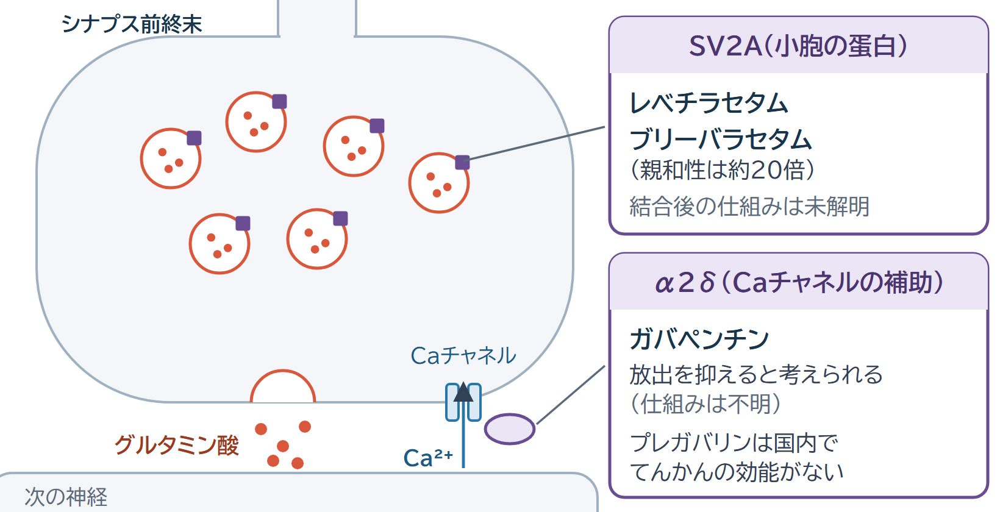
シナプス前終末の2つの標的（模式図）。シナプス小胞のSV2Aにレベチラセタム・ブリーバラセタムが、電位依存性Caチャネルの補助サブユニットα2δにガバペンチンが結合する。どちらも結合した後にどう発作が抑えられるかは分かっていない。
図5
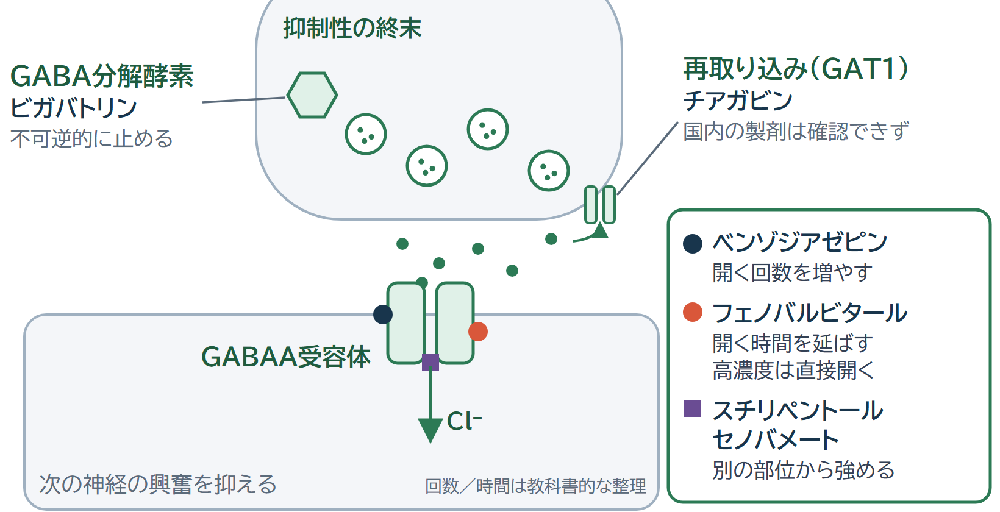
GABAシナプスの3つの標的（模式図）。GABAA受容体（ベンゾジアゼピン・フェノバルビタール・スチリペントール・セノバメート）、GABAを分解する酵素（ビガバトリン）、GABAの再取り込みを担うGAT1（チアガビン。国内で使える製剤は確認できなかった）。
図6
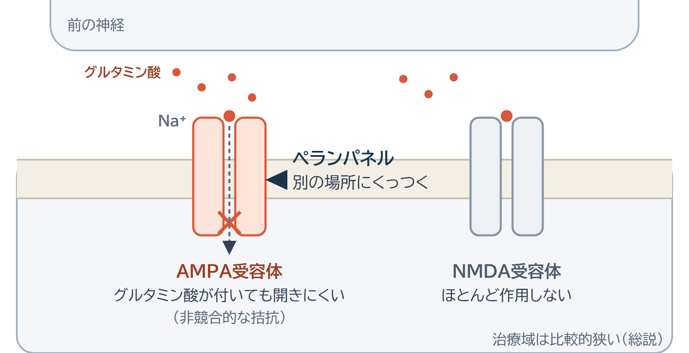
AMPA受容体とペランパネル（模式図）。グルタミン酸の結合部位とは別の部位に結合して受容体を抑える（非競合的拮抗）。
図7
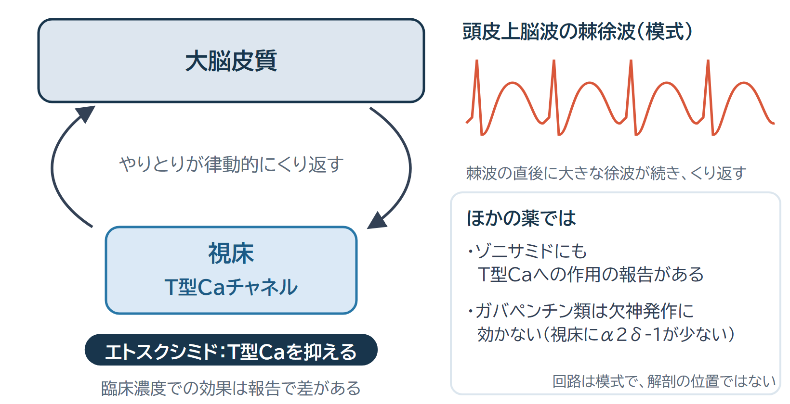
視床と皮質の回路とT型Caチャネル（模式図）。視床皮質回路の律動が欠神発作の棘徐波の基盤となり、エトスクシミドはT型Caチャネルを抑えると考えられている。
図8
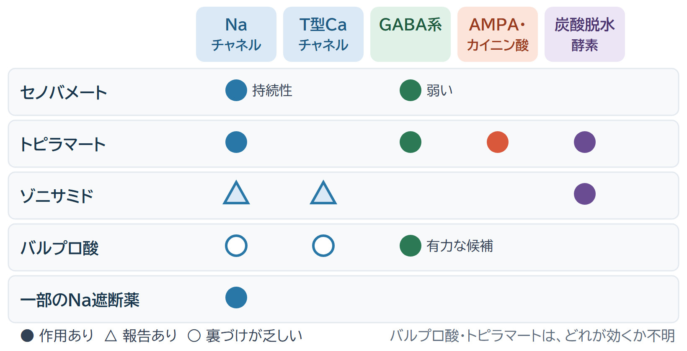
複数の標的をもつ薬（模式図）。バルプロ酸・トピラマート・ゾニサミド・セノバメートの標的を並べた。バルプロ酸とトピラマートは、どの作用が効いているかが分かっていない。ゾニサミドのNa・T型Caへの作用は「報告あり」（三角）として区別した。
図9
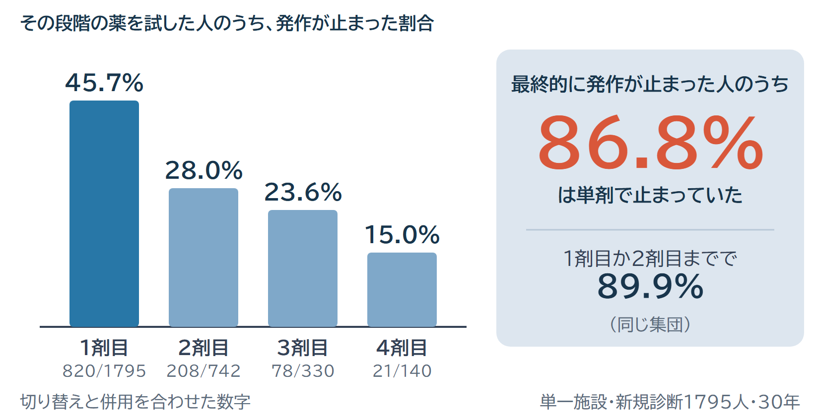
段階ごとの発作消失（グラスゴーの施設の30年間の追跡研究）。その段階の薬を試した人のうち発作が止まった割合は、1剤目45.7%、2剤目28.0%、3剤目23.6%、4剤目15.0%（切り替えと併用を合わせた数字）。最終的に発作が止まった人の86.8%は単剤だった。
図10
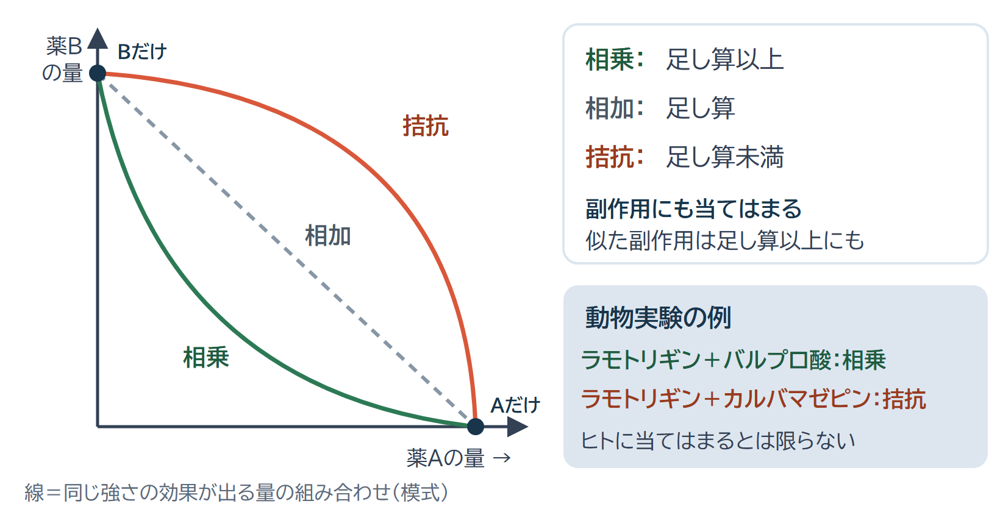
相乗・相加・拮抗の概念図（模式図）と、動物実験の isobologram 研究で報告された組み合わせの例（ラモトリギン＋バルプロ酸は相乗、ラモトリギン＋カルバマゼピンは拮抗）。動物での結果で、ヒトにそのまま当てはまるとは限らない。
図11
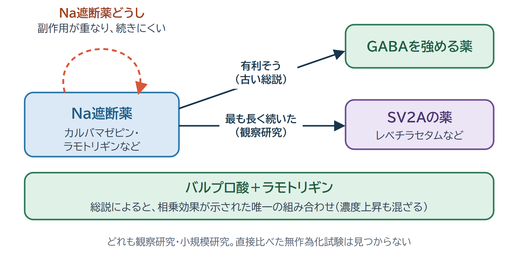
組み合わせの見取り図と根拠の強さ。Na遮断薬同士（見込みが薄い・継続期間が短い）、Na遮断薬＋GABA系（有利そうとする総説）、Na遮断薬＋SV2A（観察研究で継続が長いが、効果の比較ではない）、バルプロ酸＋ラモトリギン（総説によると、相乗効果が示された唯一の組み合わせ）。調べた範囲では、組み合わせ同士を直接比べた無作為化試験はない。
図12
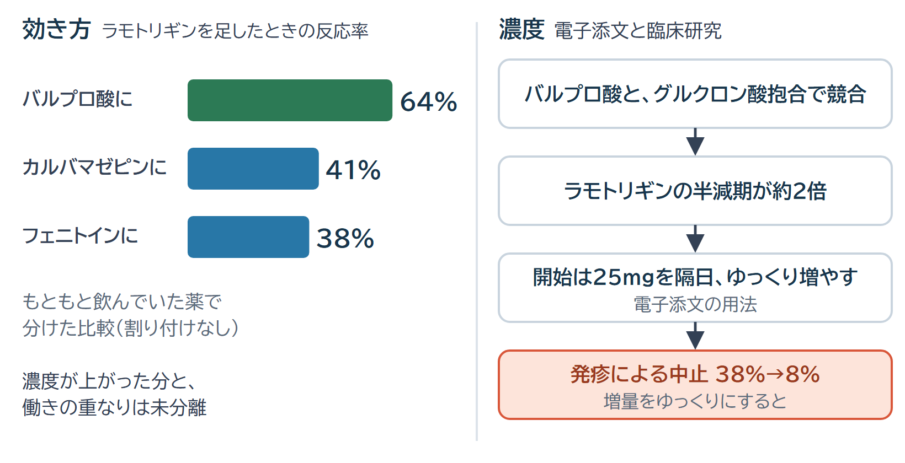
バルプロ酸＋ラモトリギン。左は効き方（ラモトリギンを追加したときの反応率：バルプロ酸に追加64%、カルバマゼピンに追加41%、フェニトインに追加38%）、右は濃度（バルプロ酸併用でラモトリギンの半減期が約2倍、開始は25mg隔日、ゆっくり増やすと発疹による中止が38%から8%に）。
図13
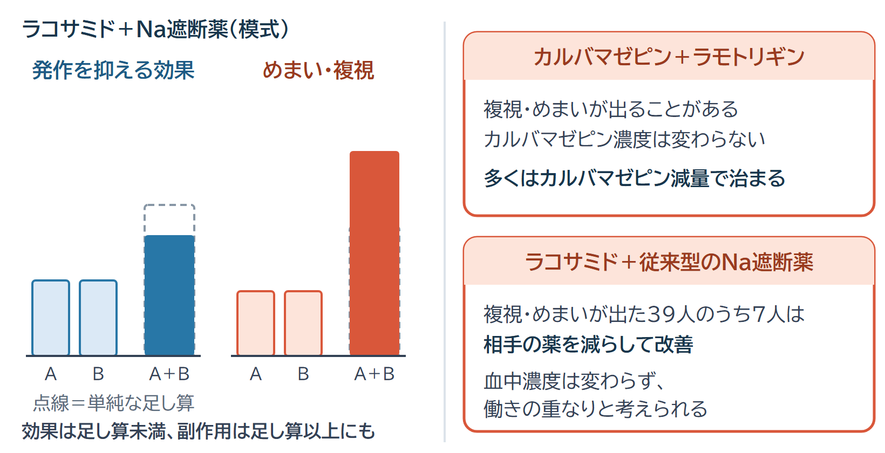
Na遮断薬を重ねたときの神経毒性。カルバマゼピン＋ラモトリギン、ラコサミド＋従来型Na遮断薬では、血中濃度が変わらないまま複視・めまいが出ることがある。ラコサミドの報告では39人中7人が、相手のNa遮断薬を減らして改善した。
図14
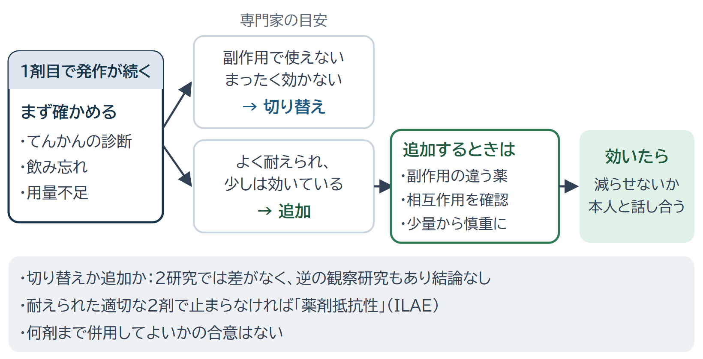
2剤目を考えるときの流れ（文献の記述をもとに整理したもので、確立した手順ではない）。診断・服薬・用量を確認し、切り替えか追加かを決め、追加するなら少量から始め、最終的に薬を減らせないかを本人と話し合う。